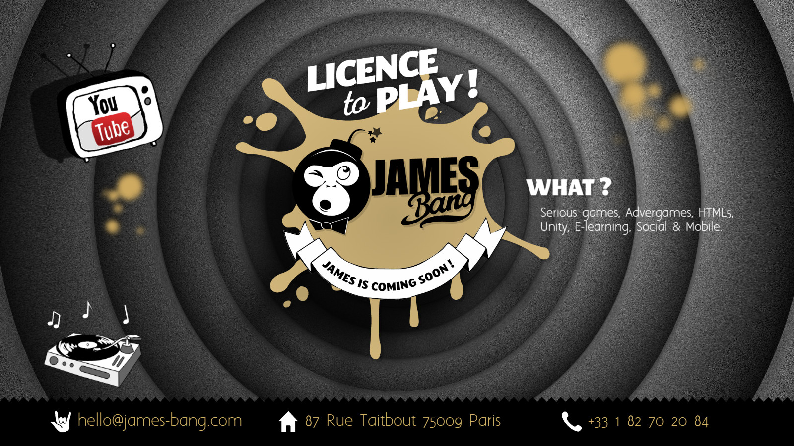

James Bang — Presentation page

James Bang is an advergame and gamification studio.
I was asked to give an animated look and feel to their presentation page. The background is WebGL and the foregroud visuals are regular images. The whole is smoothly animated. Works on mobile too.